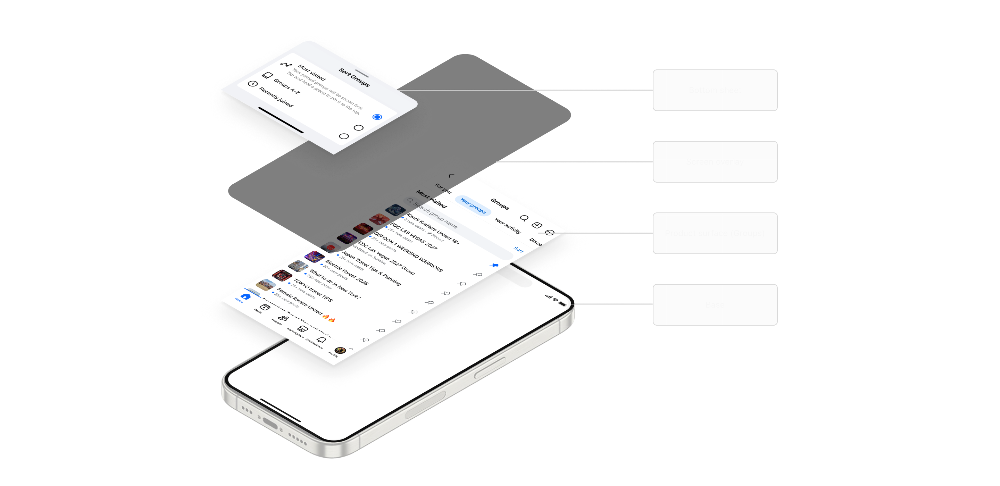
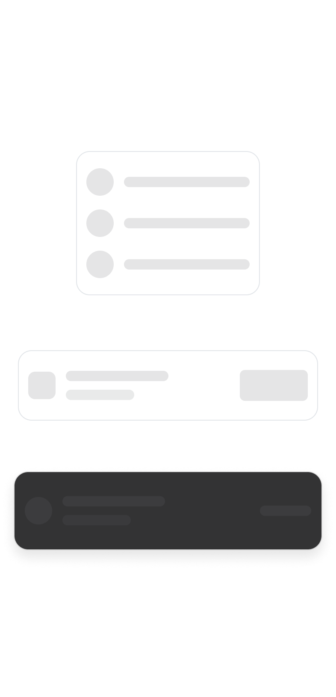
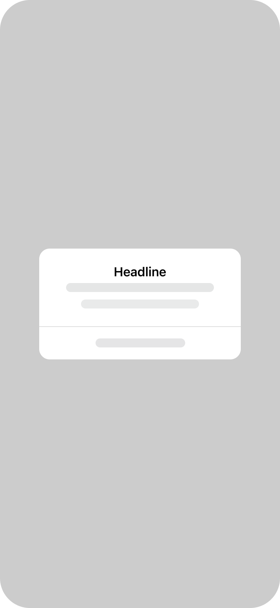
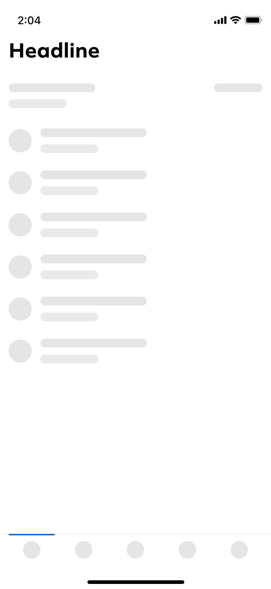
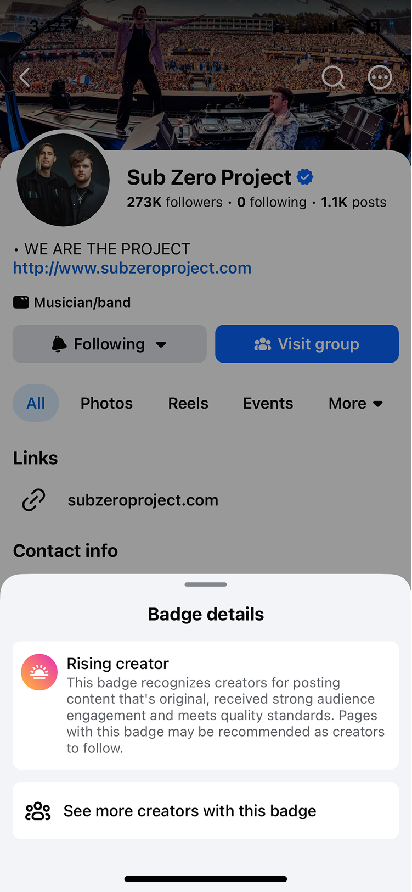
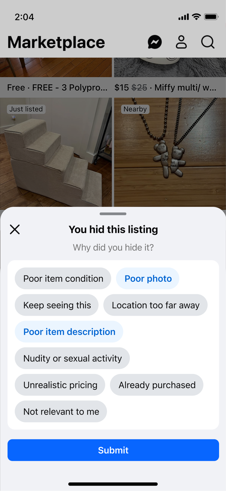
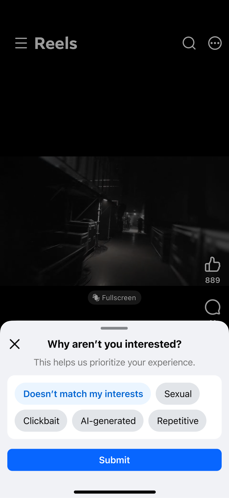
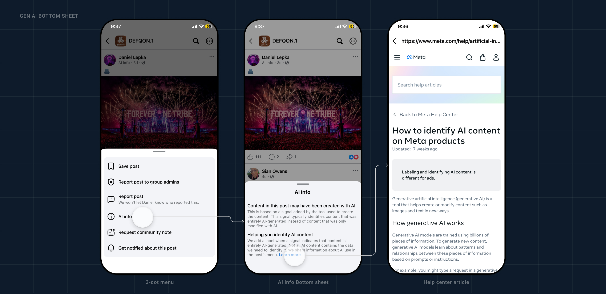

Facebook’s bottom sheets had no standard. I built the system that brought 82% into alignment.
Bottom sheets are one of Facebook's highest-impression components, and every team built them differently. I drove the unification strategy across iOS and Android, turning a fragmented interaction into an adopted cross-platform pattern - then partnered with the teams shipping on it.
Audited 50+ bottom sheets across Facebook, surfacing inconsistencies in height, navigation, and transitions.
Became the org's single reference for bottom-sheet work: 82%+ unification across platforms and 70% of all pattern improvements in H1.
Built the first net-new bottom-sheet pattern for Meta AI transparency, later extended into a company-wide AI disclosure proposal responding to FTC and global regulatory pressure.
Partnered with a navigation team and a motion designer to replace gut-instinct decisions with research-backed guidelines.
Role
Product Designer · Systems SME
SCOPE
iOS + Android · 2023-2025
{{ partnersLabel }}
{{ partnersValue }}
Before · fragmented
After · one system
A sample of the sprawl, mismatched titles, nav, spacing, and transitions on the left; one pattern on the right. The guidelines and framework I built gave teams a single bottom sheet to reach for, and later unblocked GenAI work that had stalled waiting on the guidance.
Bottom sheet · drag before → after
01 — Overview
The org had 60+ patterns. I owned the one that was everywhere and documented nowhere.
191 teams build on the system across Meta. I became the dedicated owner of one pattern inside it, bottom sheets, taking it from ad-hoc to standardized.
02 — The problem
Every team solved the same interaction differently.
Bottom sheets appeared across Facebook, but their anatomy, motion, height, and accessibility behavior changed from surface to surface. Teams built these independently with no shared reference, no record of past decisions. The inconsistency slowed teams down and made the product harder to predict.
03 — The process
Decide the container.
The first question wan't how to build it. It was whether a bottom sheet was right at all.
I audited existing use cases, separated genuine product needs from accidental variation, and defined when teams should use a sheet, then which container behavior each job required.

A bottom sheet is a container stack, not a single screen: base, product surface, screen overlay, and the sheet itself. Naming those layers is what let one decision, when to use a sheet, apply consistently across every surface.
Bottom sheet · container anatomy
01
Choose the right container
Match the pattern to the user's job, not team preference.
02
Standardize expectations
Preserve hierarchy, dismissal, motion, and accessibility.
03
Allow purposeful variation
Adapt height and content only when the experience requires it.
The framework
Teams were choosing containers by how they looked.
I decided to organize modalities by how much they interrupt and how much they commit the user, not by how they look, because a container is a decision about the user's job, not the designer's taste.
Modality Unification gave the org three things it had never had in one place: a shared mental model, a decision tree, and the guidelines underneath it.

Popover
Glance and dismiss. The task survives without it.
Bottom sheet
A real task, with the surface behind it still in view.

Dialog
A decision that has to be made before anything else continues.

Full screen
The task is the destination, not an interruption of one.
Less interruption, less commitment
More interruption, more commitment
Once modality is a spectrum, "which container" stops being a matter of preference and becomes a question with an answer. The decision tree built on top of it is the artifact that mattered most: it replaced feature-by-feature debate with a question any designer could answer without me in the room.
Modality unification · the spectrum
04 — Spec it to the token
A pattern is more than a polished screen.
I defined the components, tokens, relationships, responsive behavior, motion, and accessibility rules teams needed to build complete flows - not isolated UI.
The People Picker bottom sheet, decomposed: each region maps to a reusable main component with its own redlines, tokens, and accessibility annotations. Document the pieces and the relationships once, and any team can assemble the whole correctly.
People picker · bottom-sheet anatomy
05 — See it in motion
Content fit-behavior
Drag, snap, dismiss, the motion spec other teams now reference.
Full-height behavior
Search, select, limit-reached, one pattern, every entry point.
06 — Drive adoption
Publishing guidance didn't create adoption.
Working alongside teams did.
I became the bottom-sheet point of contact, reviewing work in 50+ cross-functional critiques and coaching 20+ designers through office hours. Real edge cases improved the system instead of becoming reasons to bypass it.
07 — Prove the leverage
A standard is only as good as what teams build on it.
I measured the system considering adoption, reach, and whether teams could use it without rebuilding.
10% → 82%
cross-platform standardization
across iOS and Android
9,323
bottom-sheet instances
brought to accessibility standards
1.06%
component detach rate
vs. 2.47% team average
The standard didn't ship these. Teams did, on top of it.
08 — What teams shipped on it

+5.1%
Badge acceptance
A clearer celebration and details experience, built on the pattern.

-22%
Repeat negative feedback
A new tombstone variant helped users trust the action.

+4M
Weekly "Not interested" clicks
More intent captured, on the same standardized sheet.
So I specced it, down to the token.
Every variant mapped to a named component, every gap to a spacing token, every string to a type style, rigorous enough for a partner team to pick up and ship without me in the room.
Two example sheets with every region mapped to a component, every gap to a spacing token, and every string to a type style, the standard other teams measured their own work against.
Bottom sheet · annotated examples
09 — The outcome
Stress-test the system Two years later: AI Transparency
I returned to the system for a regulatory disclosure it had never anticipated. Extending the framework, rather than creating another one-off, proved it could absorb new product and policy pressure.
"Net-new, no spec to copy. I built the disclosure pattern from scratch, and it became the template the company-wide compliance proposal grew out of."

The net-new pattern in context: from the post's 3-dot menu into the "AI info" bottom sheet, telling users when AI may have been used, and out to the Meta Help Center. The disclosure sheet is the piece that had no prior spec; I built it from scratch to unblock Meta AI.
Gen AI · AI info bottom sheet
10 — The results
What shipped, and what stuck.
82%
Bottom-sheet unification across platforms
70%
Of all Blueprint pattern improvements in H1
60+
Patterns documented on Blueprint's internal reference site
Bottom-sheet standard → org referenceMeta AI's first transparency pattern, unblockedExtended into a company-wide AI disclosure proposal
In closing
I didn't just document a component. I built a system teams could adopt, trust, and extend.
07 · What I was reaching for
I wanted to bring rigor where there had been none, trading gut instinct for real research. Watching that discipline carry into AI transparency, somewhere I never expected to work, was proof the standard held under pressure I couldn't have predicted.